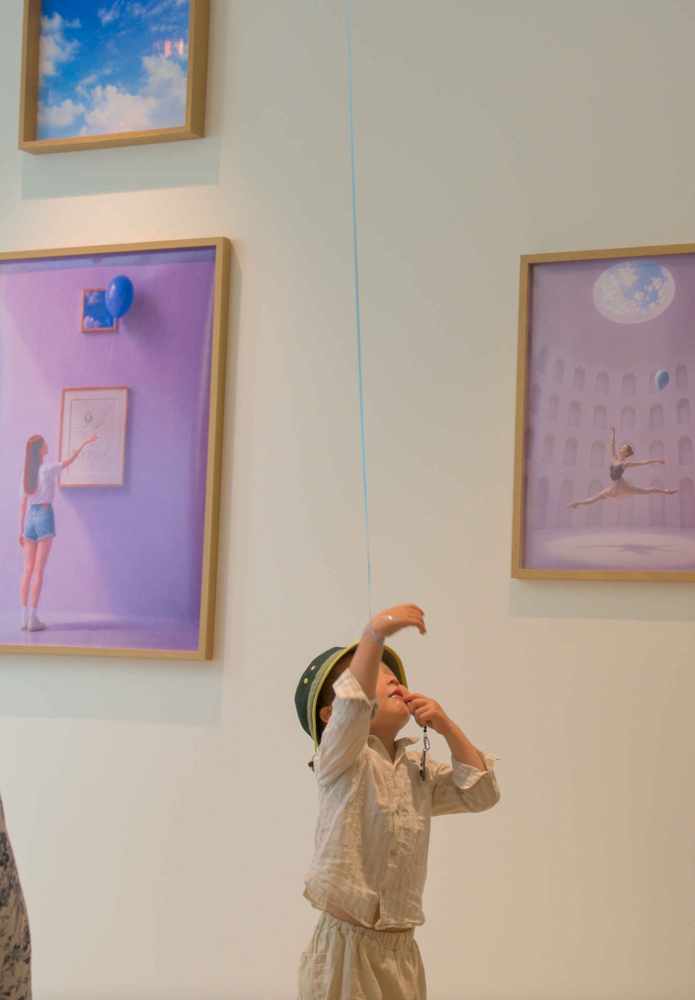
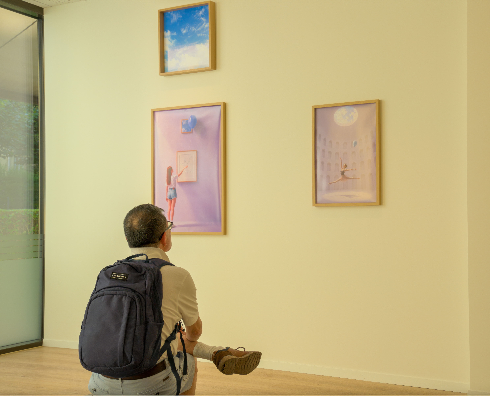

Exhibition Views
Balloon Series was first presented at Atelier Yi-An in Lucerne in 2026. Each visitor received a blue helium balloon before entering the exhibition space. The photographs below document how viewers moved through the works, held the balloons, looked closely, and brought their own interpretations into the images.





